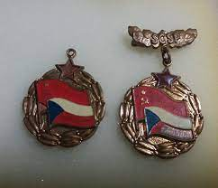

Одинцовская школа №1 была основана в 1965 году и впервые открыла свои двери 7 апреля этого года. Для многих школа стала особым местом, как для учеников, так и для учителей, например здесь репетировали и просто проводили время ребята из хоровой студии "Камертон", здесь тренировались мальчики, ставшие призёрами детского турнира по хоккею "Золотая шайба". Но не только спротивная и музыкальная деятельности развивалась в этих стенах, в нашей школе бурно развивалась дружба с Внуковским заводом огнеупорных изделий, а школьный КИД активно сторудничал с обществом Советско-Чехословацкой дружбы.